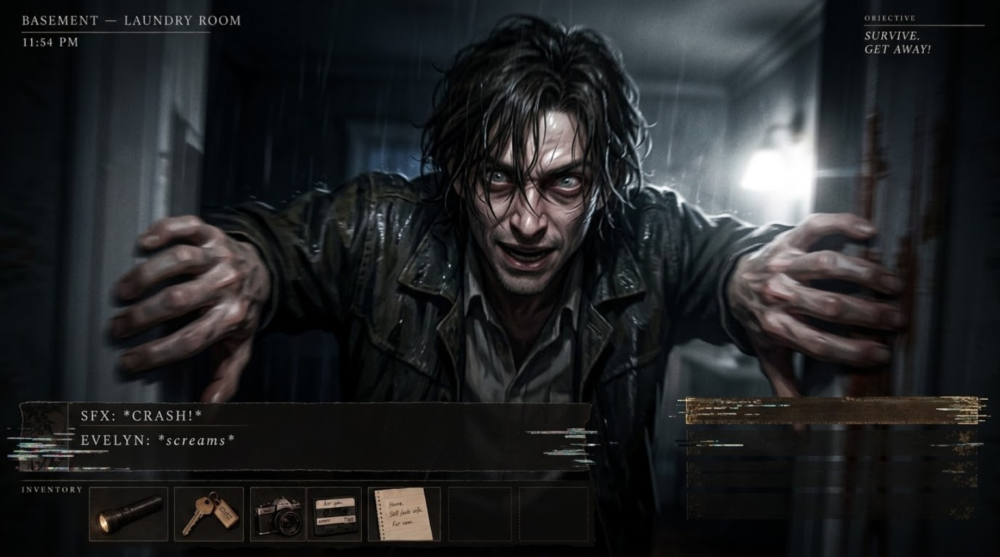

LIVING ROOM
10:47 PMI · THE FIRST CALLOBJECTIVEThe telephone is ringing.
18 EXPOSURES · 360°
STAMINA
BATTERY
BREATH
EVELYN
The house sounds different when no one else is home.
INVENTORY
WASD · WALK DRAG · LOOK E · INTERACT F · LIGHT C · PHOTO SHIFT · RUN

YOU CAN’T KEEP ME OUT.